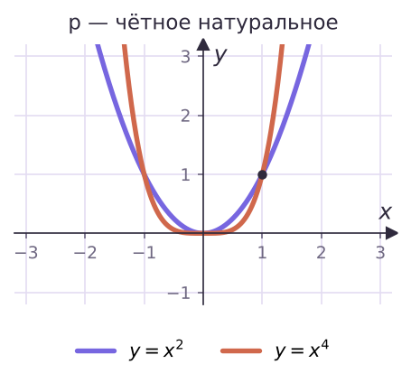
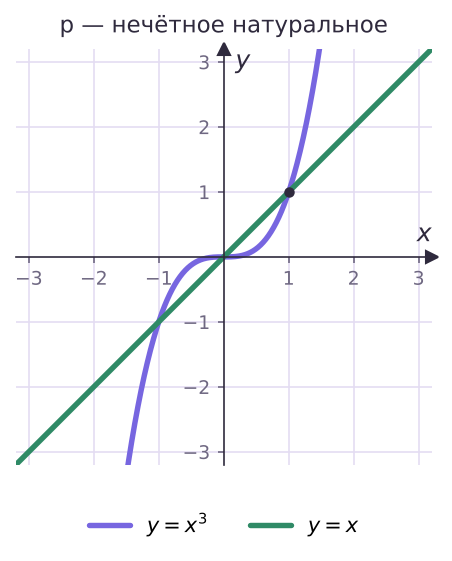
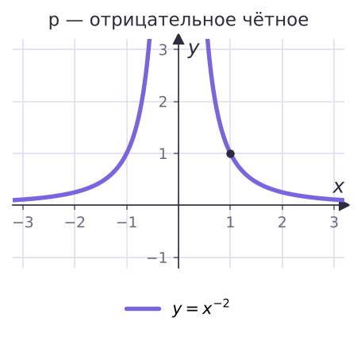
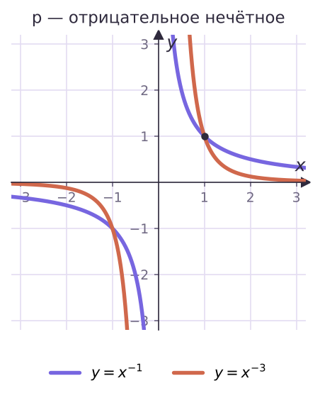
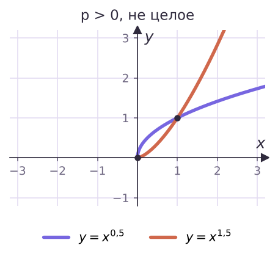
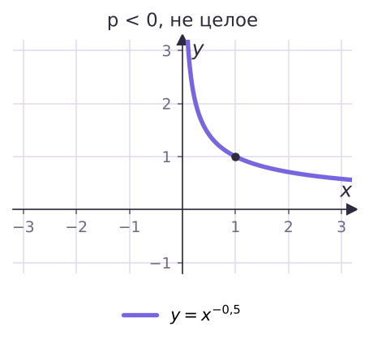

Теория
Функция y = xp, где p — заданное действительное число, называется степенной. Вы уже знаете несколько её представителей: y = x, y = x², y = x³, y = 1/x = x−1, y = √x = x1/2. Вид графика и свойства зависят от показателя. Удобно разобрать шесть случаев.
Натуральный показатель


| Показатель | D(y) | E(y) | Чётность | Монотонность |
|---|---|---|---|---|
| p = 2n (2, 4, 6, …) | ℝ | [0; +∞) | чётная | убывает при x ≤ 0, возрастает при x ≥ 0 |
| p = 2n − 1 (1, 3, 5, …) | ℝ | ℝ | нечётная | возрастает на ℝ |
Целый отрицательный показатель


| Показатель | D(y) | E(y) | Чётность | Монотонность |
|---|---|---|---|---|
| p = −2n (−2, −4, …) | x ≠ 0 | y > 0 | чётная | возрастает при x < 0, убывает при x > 0 |
| p = −(2n − 1) (−1, −3, …) | x ≠ 0 | y ≠ 0 | нечётная | убывает на (−∞; 0) и на (0; +∞) |
Функция y = x−1 убывает на каждом из промежутков, но не «убывает на всей области определения»: −1 < 1, а (−1)−1 = −1 < 1−1 = 1. Говорить нужно «убывает на (−∞; 0) и на (0; +∞)».
Нецелый показатель


| Показатель | D(y) | E(y) | Чётность | Монотонность |
|---|---|---|---|---|
| p > 0, не целое | x ≥ 0 | y ≥ 0 | ни чётная, ни нечётная | возрастает |
| p < 0, не целое | x > 0 | y > 0 | ни чётная, ни нечётная | убывает |
Почему при нецелом p нет отрицательных x: степень с дробным показателем определена только для неотрицательных оснований (урок 5).
Применяем свойства
Сравнить 0,7−3 и 0,8−3.
Функция y = x−3 убывает при x > 0, а 0,7 < 0,8, поэтому 0,7−3 > 0,8−3.
Найти наибольшее и наименьшее значения y = x⁴ на отрезке [−2; 1].
Функция убывает на [−2; 0] и возрастает на [0; 1]. Наименьшее: y(0) = 0. Наибольшее — на одном из концов: y(−2) = 16, y(1) = 1, значит 16.
Ошибка в примере 2 — взять значения только на концах: y(−2) = 16 и y(1) = 1, и решить, что наименьшее 1. Если функция внутри отрезка меняет монотонность, проверяй и точку поворота.
Сколько решений имеет уравнение x³ = x−1?
Графики y = x³ и y = 1/x пересекаются в точках (1; 1) и (−1; −1). Проверка: x⁴ = 1, x ≠ 0 ⇒ x = ±1. Два решения.
Задачи урока
Реши в тетради. Ответы разберём на занятии.
Из учебника
- № 119 — Эскизы графиков и D, E для y = x⁶, x⁵, x−2, x−3.
- № 120 — Устно: возрастает или убывает при x > 0 при p = 7, 16, −3, −7, −4, −10.
- № 121 — Наибольшее и наименьшее значения на отрезке.
- № 122, 124 — Сравнение значения степени с единицей, сравнение значений.
Тест к уроку
Домашнее задание
№ 119, 121, 122 из учебника письменно; № 120 — устно. Нарисовать в тетради по одному эскизу на каждый из шести случаев показателя и подписать D, E, монотонность.